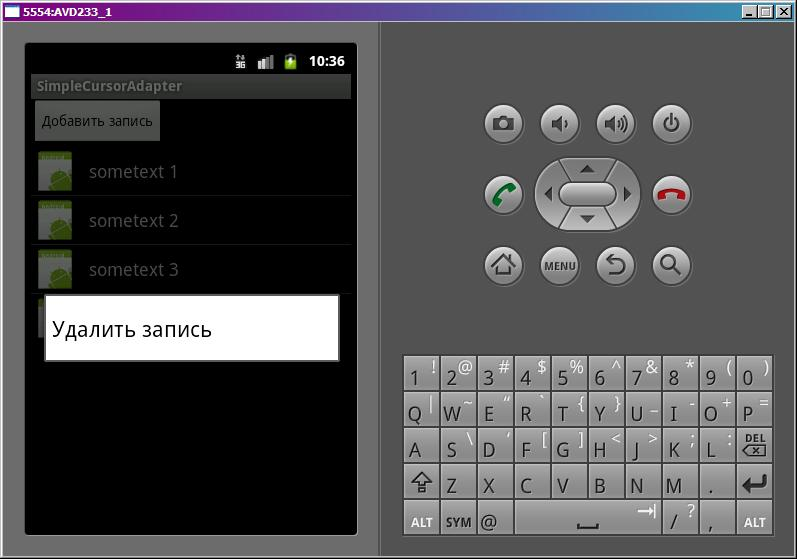

В этом уроке:
- используем SimpleCursorAdapter для построения списка
- добавляем и удаляем записи в списке
Важное замечание! Урок более не актуален, т.к. в нем используются методы, которые Google объявил устаревшими. Если вы просто зашли посмотреть, как использовать SimpleCursorAdapter, то вместо этого урока рекомендую прочитать Урок 136. Если же вы идете последовательно по урокам, то вполне можно прочесть и понять этот урок, а потом просто акутализируете свои знания в Уроке 136.
После нескольких уроков посвященных SimpleAdapter мы знаем про него достаточно и представляем схему его работы. И теперь нам будет нетрудно усвоить SimpleCursorAdapter. Он отличается тем, что в качестве данных используется не коллекция Map, а Cursor с данными из БД. И в массиве from, соответственно, мы указываем не ключи Map-атрибутов, а наименования полей (столбца) курсора. Значения из этих полей будут сопоставлены указанным View-компонентам из массива to.
Также немного отличается от SimpleAdapter стандартный биндинг и внешний ViewBinder. SimpleCursorAdapter умеет работать с TextView и ImageView компонентами и их производными, а Checkable-производные не воспримет . А при использовании ViewBinder, необходимо реализовать его метод boolean setViewValue (View view, Cursor cursor, int columnIndex). На вход он принимает View-компонент для биндинга, cursor с данными и номер столбца, из которого надо взять данные. Позиция курсора уже установлена в соответствии с позицией пункта списка. Не буду снова расписывать примеры использования, т.к. они будут очень похожи на примеры из предыдущих уроков по SimpleAdapter. Если там все было понятно, то и здесь проблем не должно возникнуть.
Итак, давайте накидаем пример использования SimpleCursorAdapter. Список будет отображать картинку и текст. Также реализуем возможность добавления и удаления данных из списка. Добавлять будем кнопкой, а удалять с помощью контекстного меню.
Создадим проект:
Project name: P0521_SimpleCursorAdapter
Build Target: Android 4.0
Application name: SimpleCursorAdapter
Package name: ru.startandroid.develop.p0521simplecursoradapter
Create Activity: MainActivity
Обычно в уроках я тексты для кнопок и прочего указывал напрямую. Делал я это не со зла, а чтобы не перегружать урок лишней информацией. Но с последними обновлениями Eclipse стал ругаться примерно так: [I18N] Hardcoded string "какой-то текст", should use @string resource. Ошибка не критична и запуску приложения никак не помешает, но некоторых она смущает. Да и действительно, хардкод – это плохо. С этого урока постараюсь следовать правилам хорошего тона и использовать файлы ресурсов. На нашем текущем уровне знаний это не должно стать помехой в понимании и усвоении уроков.
Заполняем res/values/string.xml:
<?xml version="1.0" encoding="utf-8"?>
<resources>
<string name="app_name">SimpleCursorAdapter</string>
<string name="add_record">Добавить запись</string>
<string name="delete_record">Удалить запись</string>
</resources>Тут кроме названия приложения я записал тексты для кнопки и контекстного меню
Экран main.xml:
<?xml version="1.0" encoding="utf-8"?>
<LinearLayout
xmlns:android="http://schemas.android.com/apk/res/android"
android:layout_width="fill_parent"
android:layout_height="fill_parent"
android:orientation="vertical">
<Button
android:layout_width="wrap_content"
android:layout_height="wrap_content"
android:onClick="onButtonClick"
android:text="@string/add_record">
</Button>
<ListView
android:id="@+id/lvData"
android:layout_width="match_parent"
android:layout_height="wrap_content">
</ListView>
</LinearLayout>Кнопка для добавления записи и список.
Layout для пункта списка item.xml:
<?xml version="1.0" encoding="utf-8"?>
<LinearLayout
xmlns:android="http://schemas.android.com/apk/res/android"
android:layout_width="match_parent"
android:layout_height="wrap_content"
android:orientation="horizontal">
<ImageView
android:id="@+id/ivImg"
android:layout_width="wrap_content"
android:layout_height="wrap_content"
android:src="@drawable/ic_launcher">
</ImageView>
<TextView
android:id="@+id/tvText"
android:layout_width="wrap_content"
android:layout_height="wrap_content"
android:layout_gravity="center_vertical"
android:layout_marginLeft="10dp"
android:text=""
android:textSize="18sp">
</TextView>
</LinearLayout>Картинка и текст.
Т.к. SimpleCursorAdapter – это адаптер для работы с данными из БД, то нам нужно эту БД организовать. Чтобы не загромождать MainActivity.java, я вынесу код по работе с БД в отдельный класс DB. Создаем класс DB.java в том же пакете, где и MainActivity.java
Код DB.java:
package ru.startandroid.develop.p0521simplecursoradapter;
import android.content.ContentValues;
import android.content.Context;
import android.database.Cursor;
import android.database.sqlite.SQLiteDatabase;
import android.database.sqlite.SQLiteDatabase.CursorFactory;
import android.database.sqlite.SQLiteOpenHelper;
public class DB {
private static final String DB_NAME = "mydb";
private static final int DB_VERSION = 1;
private static final String DB_TABLE = "mytab";
public static final String COLUMN_ID = "_id";
public static final String COLUMN_IMG = "img";
public static final String COLUMN_TXT = "txt";
private static final String DB_CREATE =
"create table " + DB_TABLE + "(" +
COLUMN_ID + " integer primary key autoincrement, " +
COLUMN_IMG + " integer, " +
COLUMN_TXT + " text" +
");";
private final Context mCtx;
private DBHelper mDBHelper;
private SQLiteDatabase mDB;
public DB(Context ctx) {
mCtx = ctx;
}
// открыть подключение
public void open() {
mDBHelper = new DBHelper(mCtx, DB_NAME, null, DB_VERSION);
mDB = mDBHelper.getWritableDatabase();
}
// закрыть подключение
public void close() {
if (mDBHelper!=null) mDBHelper.close();
}
// получить все данные из таблицы DB_TABLE
public Cursor getAllData() {
return mDB.query(DB_TABLE, null, null, null, null, null, null);
}
// добавить запись в DB_TABLE
public void addRec(String txt, int img) {
ContentValues cv = new ContentValues();
cv.put(COLUMN_TXT, txt);
cv.put(COLUMN_IMG, img);
mDB.insert(DB_TABLE, null, cv);
}
// удалить запись из DB_TABLE
public void delRec(long id) {
mDB.delete(DB_TABLE, COLUMN_ID + " = " + id, null);
}
// класс по созданию и управлению БД
private class DBHelper extends SQLiteOpenHelper {
public DBHelper(Context context, String name, CursorFactory factory,
int version) {
super(context, name, factory, version);
}
// создаем и заполняем БД
@Override
public void onCreate(SQLiteDatabase db) {
db.execSQL(DB_CREATE);
ContentValues cv = new ContentValues();
for (int i = 1; i < 5; i++) {
cv.put(COLUMN_TXT, "sometext " + i);
cv.put(COLUMN_IMG, R.drawable.ic_launcher);
db.insert(DB_TABLE, null, cv);
}
}
@Override
public void onUpgrade(SQLiteDatabase db, int oldVersion, int newVersion) {
}
}
}Здесь все нам знакомо по прошлым урокам SQLite.
Мы создаем несколько public методов, чтобы Activity могла через них работать с данными:
open – установить соединение
close – закрыть соединение
getAllData – получить курсор со всеми данными из таблицы
addRec – добавить запись
delRec – удалить запись
Это методы-оболочки для работы с БД, которые предоставят MainActivity только те возможности, какие ей нужны.
Вложенный класс DBHelper – для создания и управления БД. В методе onCreate мы создаем таблицу и заполняем ее сгенерированными данными. Метод onUpgrade я оставил пустым, т.к. в этом примере не планирую обновлять версию БД.
Код MainActivity.java:
package ru.startandroid.develop.p0521simplecursoradapter;
import android.app.Activity;
import android.database.Cursor;
import android.os.Bundle;
import android.view.ContextMenu;
import android.view.ContextMenu.ContextMenuInfo;
import android.view.MenuItem;
import android.view.View;
import android.widget.AdapterView.AdapterContextMenuInfo;
import android.widget.ListView;
import android.widget.SimpleCursorAdapter;
public class MainActivity extends Activity {
private static final int CM_DELETE_ID = 1;
ListView lvData;
DB db;
SimpleCursorAdapter scAdapter;
Cursor cursor;
/** Called when the activity is first created. */
public void onCreate(Bundle savedInstanceState) {
super.onCreate(savedInstanceState);
setContentView(R.layout.main);
// открываем подключение к БД
db = new DB(this);
db.open();
// получаем курсор
cursor = db.getAllData();
startManagingCursor(cursor);
// формируем столбцы сопоставления
String[] from = new String[] { DB.COLUMN_IMG, DB.COLUMN_TXT };
int[] to = new int[] { R.id.ivImg, R.id.tvText };
// создааем адаптер и настраиваем список
scAdapter = new SimpleCursorAdapter(this, R.layout.item, cursor, from, to);
lvData = (ListView) findViewById(R.id.lvData);
lvData.setAdapter(scAdapter);
// добавляем контекстное меню к списку
registerForContextMenu(lvData);
}
// обработка нажатия кнопки
public void onButtonClick(View view) {
// добавляем запись
db.addRec("sometext " + (cursor.getCount() + 1), R.drawable.ic_launcher);
// обновляем курсор
cursor.requery();
}
public void onCreateContextMenu(ContextMenu menu, View v,
ContextMenuInfo menuInfo) {
super.onCreateContextMenu(menu, v, menuInfo);
menu.add(0, CM_DELETE_ID, 0, R.string.delete_record);
}
public boolean onContextItemSelected(MenuItem item) {
if (item.getItemId() == CM_DELETE_ID) {
// получаем из пункта контекстного меню данные по пункту списка
AdapterContextMenuInfo acmi = (AdapterContextMenuInfo) item.getMenuInfo();
// извлекаем id записи и удаляем соответствующую запись в БД
db.delRec(acmi.id);
// обновляем курсор
cursor.requery();
return true;
}
return super.onContextItemSelected(item);
}
protected void onDestroy() {
super.onDestroy();
// закрываем подключение при выходе
db.close();
}
}Хорошо, что мы создали DB.java. Благодаря ему в MainActivity.java все красиво, прозрачно и удобно. Смотрим код.
В onCreate мы организуем подключение к БД, получаем курсор и просим Activity присмотреть за ним. Теперь при смене Lifecycle-состояний Activity, оно будет менять соответствующим образом состояния курсора. Затем настраиваем биндинг – формируем массивы, которые укажут адаптеру, как сопоставлять данные из курсора и View-компоненты. В R.id.ivImg пойдет значение из поля img, а в R.id.tvText – значение из поля txt. Имена полей мы здесь указываем public-константами класса DB. Далее мы создаем адаптер и настраиваем список на его использование. В конце добавляем контекстное меню к списку.
В методе onButtonClick мы генерируем и добавляем запись в БД и обновляем курсор методом requery, чтобы получить свежие данные из БД.
При создании контекстного меню, в методе onCreateContextMenu, мы добавляем пункт для удаления.
В методе onContextItemSelected мы обрабатываем нажатие пункта контекстного меню. Чтобы получить данные по пункту списка, для которого был совершен вызов контекстного меню, мы используем метод getMenuInfo. Объект AdapterContextMenuInfo содержит данные о View, id и позиции пункта списка. Нам нужно id. Этот id равен значению поля _id для соответствующей записи в курсоре. Мы вызываем метод удаления записи и обновляем курсор.
В методе onDestroy мы закрываем подключение к БД. Это будет происходить при закрытии Activity.
Все сохраняем и запускаем.

Нажав на кнопку, мы добавляем запись. А вызвав контекстное меню (долгое нажатие) для пункта списка можно его удалить.
Мы рассмотрели возможность добавления и удаления записей в списке при использовании SimpleCursorAdapter. Возможность редактирования я рассматривать не стал. Это не особо усложнило бы урок, но сделало бы его больше и размыло бы тему. А я стараюсь делать уроки максимально заточенными под конкретную тему. Для тех, кому интересно редактирование – Google любезно создал такой пример на официальном сайте - http://developer.android.com/resources/tutorials/notepad/index.html. Мой пример похож на него, так что будет проще разобраться.
Кстати, в этом уроке мы встретили список, в котором id пункта может не совпадать с позицией. Для теста попробуйте повесить обработку нажатия на пункт списка и посмотреть, что позиция – это будет позиция пункта в списке, а id – это идентификатор записи из БД (поле _id). Чтобы это работало, необходимо поле-идентификатор в таблице называть _id, т.к. курсор будет использовать его, как id. Иначе получим ошибку.